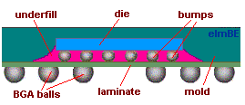
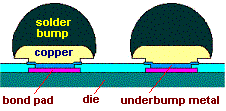
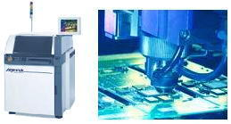

Flip-Chip
Assembly
The term
“flip-chip”
refers to an electronic component or semiconductor device that can be
mounted directly onto a substrate, board, or carrier in a
‘face-down’
manner. Electrical connection is achieved through conductive
bumps built on the
surface of the chips, which is why the mounting process is ‘face-down’
in nature. During mounting, the chip is
flipped on the substrate, board, or
carrier, (hence the name ‘flip-chip’), with the bumps being precisely
positioned on their target locations. Because flip chips do not require
wirebonds, their size is much smaller than their conventional
counterparts.
The flip-chip concept is
not
new, having been around as early as the
1960’s when IBM used them for their mainframes. Since then,
various companies have developed the flip-chip for use in thousands of
different applications, taking advantage of the size and cost benefits
offered by this assembly method. Flip chips have likewise eliminated
performance problems related to inductance and capacitance associated
with bond wires.

Fig.
1.
Structure of
a Flip Chip BGA
The flip chip is structurally different from traditional semiconductor
packages, and therefore requires an assembly process that also differs
from conventional semiconductor assembly.
Flip chip assembly consists of three
major steps: 1) bumping
of the chips; 2) ‘face-down’ attachment
of the bumped chips to the substrate or board; and 3)
under-filling, which
is the process of filling the open spaces between the chip and the
substrate or board with a non-conductive but mechanically protective
material. Given the many different materials and technologies used in
the bumping, attachment, and underfilling steps, the flip chip now comes
in a vast array of variants.
Flip-chip Bumping
Physically, the bump on a flip-chip is
exactly just that – a bump formed on a bond pad of the die. Bumps
serve various functions: 1) to provide an
electrical
connection between the die and the board or substrate; 2) to provide
thermal
conduction from the chip to the board or substrate, thereby helping
dissipate heat from the flip chip; 3) to act as
spacer
for preventing electrical shorts between the die or chip circuit and the
board or substrate circuit; and 4) to provide
mechanical
support to the flip-chip.
There are many known processes for flip-chip bumping.
Solder bumping consists of
placing
underbump metallization (UBM)
over the bond pad by sputtering, plating, or a similar means. This
process of putting UBM removes the passivating oxide layer on the bond
pad and defines the solder-wetted area. Solder may then be
deposited over the UBM by a suitable method, e.g., evaporation,
electroplating, screen-printing, needle-depositing, etc.
This entire process of solder bumping
is done at
wafer level.
Solder-bumped wafers are sawn into individual flip-chips that get
mounted on a board or substrate by subjecting the assembly to a
temperature that’s high enough to melt the solder, forming the
interconnection.
Another type of
flip-chip bumping is what’s known as
plated bumping. Plated bumping removes
the oxide layer on the Al bond pad through wet chemical cleaning
processes. Electroless nickel plating
is then employed to cover the Al bond pad with a nickel layer to the
desired plating thickness, forming the foundation of the bump. An
immersion gold
layer is then added over the nickel bump for protection.
Stud bumping is
another flip-chip bumping process. This technique is very similar to
gold ball bonding in the sense that it starts by
melting the end of
the wire to form a free-air ball or sphere, which is then attached to the
bond pad. Unlike wirebonding though, the wire is broken off the ball
bond after the latter has been attached to the bond pad. Gold
stud-bumped flip chips may be mounted on a board or substrate using
conductive adhesives or by thermosonic gold-to-gold interconnection.
Adhesive bumping
is a flip-chip bumping process that stencils electrically conductive
adhesive over an underbump metallization placed over the bond pad. The
stenciled adhesive serves as the bump after it has been cured. Mounting
of adhesive-bumped flip-chips also uses conductive adhesives.

Fig.
2. Example of a Solder Bump Structure
Flip-Chip Underfilling
The open spaces
between the flip chip surface and the board or substrate is filled with
a non-conductive adhesive ‘underfill’
material to protect the bumps and the flip chip surface from moisture,
contaminants, and other environmental hazards. More importantly, this
underfill material mechanically locks
the flip chip surface to the board or substrate, thereby reducing the
differences between the expansion of the flip chip and the substrate.
This prevents the bumps from being damaged by shear stresses caused by
differences between the thermal expansions
of the chip and the substrate.
Flip-chip
underfilling is achieved by needle dispensation (Fig. 5) along the edges of the
flip-chip.
Capillary action
then draws the dispensed underfill inwards, until the open spaces are
filled. Thermal
curing
is then performed to form the permanent bond.
|
 |
Fig.
3. Photos of an underfill dispensing machine (left)
and an
underfill dispensing tool (right) |
Front-End
Assembly Links:
Wafer Backgrind;
Die Preparation;
Die Attach;
Wirebonding;
Die Overcoat
Back-End
Assembly Links:
Molding;
Sealing;
Marking;
DTFS;
Leadfinish
See Also:
BGA;
CSP;
IC Manufacturing;
Assembly Equipment
HOME
Copyright
©
2001-2006
www.EESemi.com.
All Rights Reserved.